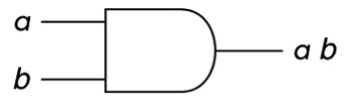
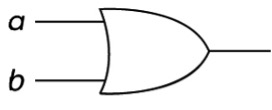
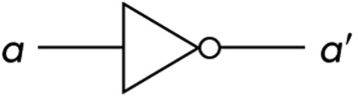
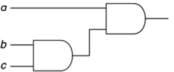
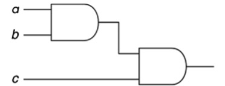
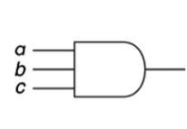
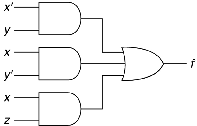
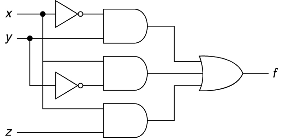

Overview
- Review the definitions, symbols, and truth tables for each basic logic gate.
- Figures are provided for AND, OR, and NOT gates.
- Truth tables are interactive: fill in the outputs and check your answers.
AND Gate
Operation: Output = 1 when both inputs are 1.
Symbol: ab, a•b

| a | b | a·b |
|---|---|---|
| 0 | 0 | 0 |
| 0 | 1 | 0 |
| 1 | 0 | 0 |
| 1 | 1 | 1 |
Interactive Simulator
OR Gate
Operation: Output = 1 when any input is 1.
Symbol: a+b

| a | b | a+b |
|---|---|---|
| 0 | 0 | 0 |
| 0 | 1 | 1 |
| 1 | 0 | 1 |
| 1 | 1 | 1 |
Interactive Simulator
NOT Gate
Operation: Output = 1 when input is 0; Output = 0 when input is 1.
Symbol: a’, ~a, a̅

| a | a’ |
|---|---|
| 0 | 1 |
| 1 | 0 |
Interactive Simulator
6. Find output for the following circuit with inputs (a=1, b=1, c=1)

Text description of circuit 6
This circuit has three inputs labeled a, b, and c. Inputs b and c flow into an AND gate. The output of that AND gate, along with input a, flow into a final AND gate to produce the output.
7. Find output for the following circuit with inputs (a=1, b=0, c=1)

Text description of circuit 7
This circuit has three inputs labeled a, b, and c. Inputs a and b flow into an AND gate. The output of that AND gate, along with input c, flow into a final AND gate to produce the output.
8. Find output for the following circuit with inputs (a=0, b=0, c=1)

Text description of circuit 8
This circuit has three inputs labeled a, b, and c. Inputs a, b and c flow into an AND gate to produce the output.
9. Derive the logic function for the following circuit diagram

Text description of circuit 9
This circuit has three inputs labeled x, y, and z. Inputs x' and y flow into an AND gate. Inputs x and y' flow into another AND gate. Inputs x and z flow into a third AND gate. The outputs of three AND gates, flow into a final AND gate to produce the output.
10. Derive the logic function for the following circuit diagram

Text description of circuit 10
This circuit has three inputs: x, y, and z, which split into three parallel branches. In the first branch, input x passes through a NOT gate, and then flows into an AND gate alongside input y. In the second branch, input y passes through a NOT gate, and then flows into an AND gate alongside input x. In the third branch, inputs x and z flow directly into an AND gate. Finally, the outputs of all three AND gates flow into a single OR gate to produce the final output.